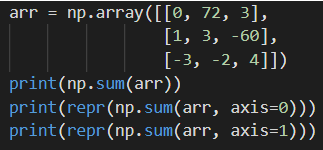

Write code to obtain sums and concatenations of NumPy arrays
Summation
In the chapter on Math, we calculated the sum of individual values between multiple arrays. To sum the values within a single array, we use the np.sum function
The function takes in a NumPy array as its required argument, and uses the axis keyword argument in the same way as described in previous chapters. If the axis keyword argument is not specified, np.sum returns the overall sum of the array.

In addition to regular sums, NumPy can perform cumulative sumsusing np.cumsum . Like np.sum, np.cumsum also takes in a NumPy array as a required argument and uses the axis argument. If the axis keyword argument is not specified, np.cumsum will return the cumulative sums for the flattened array.
Concatenation
An important part of aggregation is combining multiple datasets. In NumPy, this equates to combining multiple arrays into one. The function we use to do this is np.concatenate.
Like the summation functions, np.concatenate uses the axis keyword argument. However, the default value for axis is 0 (i.e. dimension 0). Furthermore, the required argument for np.concatenate isa list of arrays which the function combines into a single array.